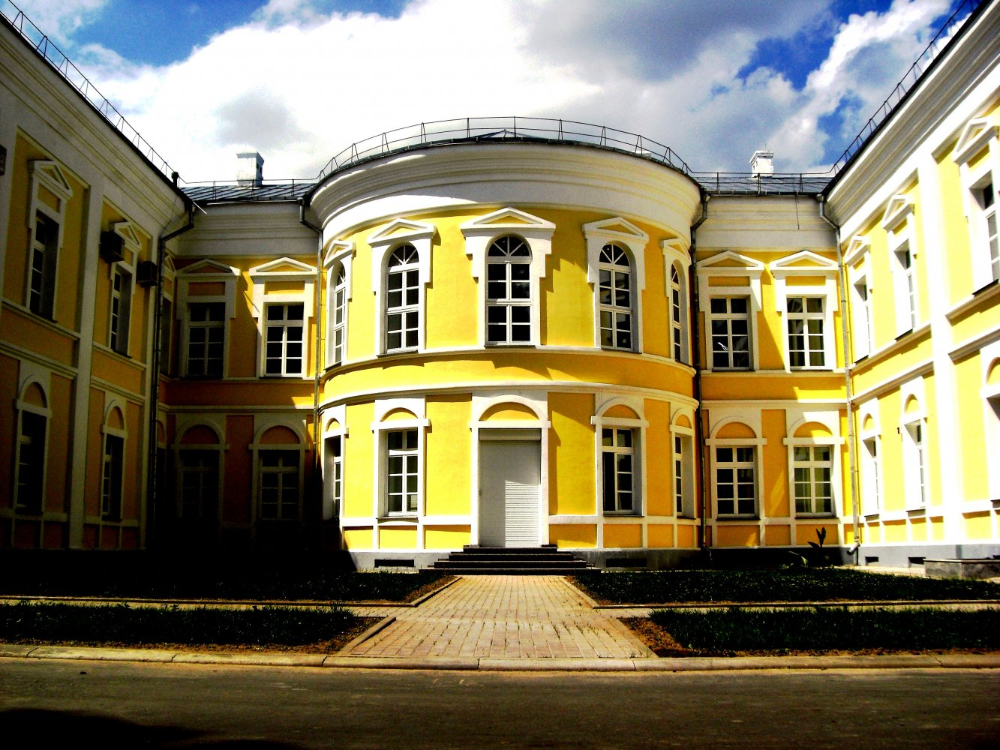

Дворец Потемкина

После раздела Речи Посполитой Кричев, как и многие восточные земли Великого Княжества Литовского, были присоединён к Российской империи. И подарен императрицей Екатериной II графу Потёмкину в знак высочайшего расположения. В свою очередь, Потёмкин отличался серьёзной экономической смекалкой и прекрасно понял, какую выгоду можно извлечь из географического расположения Кричева, а также из реки Сож – мощной водной артерии.
Прежде всего, был заложен дворец, чтобы граф мог приезжать в Кричев в любое время. После этого в Кричеве начала строиться судоверфь, а также сопровождающие производства: прежде всего – канатная и парусная мануфактуры. После завершения этих глобальных инвестиционных проектов город перестал быть захудалой провинцией и превратился в важный, даже где-то стратегический объект. Разумеется, и его экономическая ценность для владельца – Потёмкина – значительно выросла.
В 1787 году императрица Екатерина II посетила новые российские губернии, в том числе – и Кричев. Останавливалась, разумеется, во дворце своего фаворита. Кстати, понятие «потёмкинских деревень» пошло именно из той самой поездки. Правда, историки доказали, что само по себе выражение пошло не оттого, что граф действительно занимался очковтирательством, а оттого, что многим чиновникам при дворе Екатерины очень хотелось представить его таким. На самом деле во всех принадлежащих ему местностях он основывал мануфактуры, перевозил из своих российских владений крестьян, предлагая им очень выгодные условия для переезда.
В плане дворец Потёмкина представляет собой П-образное здание высотой в два этажа. Планировка помещений, как и обязывал классицизм, была анфиладной – то есть, из одной залы можно было пройти в следующую, и далее – в следующую. В центре и первого, и второго этажей были предусмотрены круглые бальные залы, которые выдавались из общего строгого прямоугольного объёма в сторону внутреннего двора.
Впрочем, внешний вид дворца несколько изменился по сравнению с тем, каким он был при Потёмкине. Этому «поспособствовал» пожар, который в значительной степени нарушил целостность здания и потребовал некоторой перестройки. Изменился только главный фасад – приобрёл некоторые готические элементы, в частности, гранёные пилоны, а также стрельчатую форму оконных проёмов. А вот остальные фасады сохранили верность классицизму – прямоугольную форму окон, ровные прямоугольные линии фасада.
Как добраться